ドライバーユニット付きアンプ
注意！
このページに掲載したアンプのうち、SRA-14S以外のアンプについては、現行のスタックス社のヘッドフォンを接続すること自体は可能ですが、その性能を十分に発揮できるものではありません。
�@SR-1時代の初期のアンプ
最初のモデルSR-1用に用意されたアンプ。詳細は不明。オークションなどにもまず登場しない。
SRA-4S
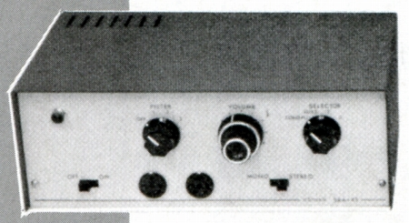
1961年発売、当時10,000円。
フォノ入力端子を持っていないラインレベル専用機だったようだ。
入力端子の感度はSRA-6Sより低いらしい。
SRA-6S
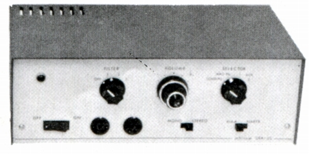
1961年発売、当時15,000円。
■入力端子/感度 フォノMM/3mV
AUX2系統以上（内1系統はコンデンサー型カートリッジ用と表記）
なお�泣XタックスのSR-1のページの取扱説明書には、フロントパネルに入力端子がある個体がのっている。
SRA-7S
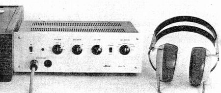
1966年発売、当時20,000円
最近、オークションで見かけたが、管球式もしくはハイブリット設計のようだ。
�ASR-3以降のアンプ
第二世代のヘッドフォン、SR-3登場以降のアンプ。ヘッドフォンとセットでしばしばオークションなどに登場するが、ドライバーユニットやアダプターに比べるとレアな存在である。
SRA-8S
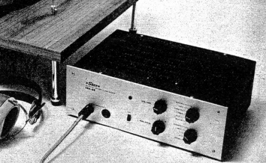
1967年発売、当時25,000円
真空管アンプ。
使用真空管
12AX7×2 6AU6×2 12AU×1 6FQ7×2
(参考）
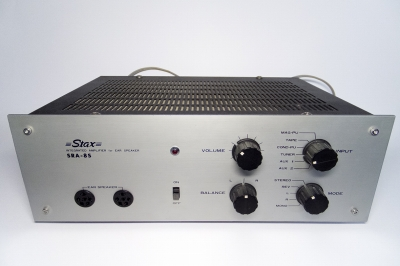
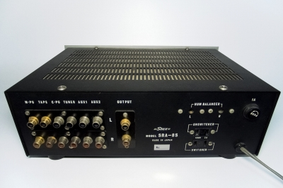
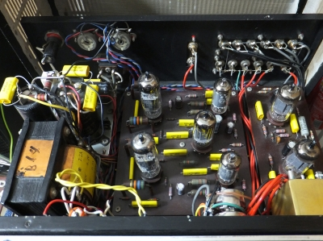
SRA-8S実機映像。
ただし、経年劣化への対処で、外装部品（端子等）や内部部品（コンデンサーなど）は交換され、オリジナルの状態ではない。
なおSRA-8S実機画像及びスペックは「美緒」さんより提供していただきました。
いただいた資料の中にはSRA-8Sの回路図もあります。
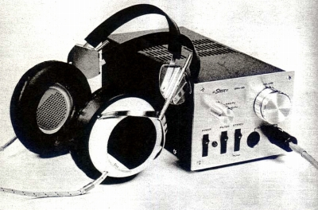
1968年発売、当時23,000円
トランジスターと真空管(6FQ7)のハイブリット設計。
■入力端子/感度 フォノMM/3mV
AUX2系統/200mV（内1系統はコンデンサー型カートリッジ用と表記）
■出力端子 イヤスピーカー用端子2系統 録音用端子/出力0.2V
■周波数帯域
20-25,000Hz±1dB
■歪率 0.5％以内（最大出力時）
■最大出力電圧 270V（各チャンネル）
■SN比 フォノMM/50dB
AUX2系統/75dB（出力電圧200Vに対する雑音レベル比）
■消費電力 約30W(100V/117V;50/60Hz)
■重量
2.5kg
■サイズ W125×H102×D278mm
■備考 MCカートリッジ対応無し、パワーアンプ接続用端子無し
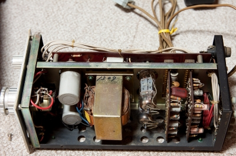
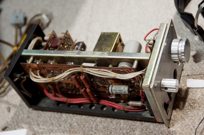
内部画像 「蒼乃雑記」の蒼乃さんより提供していただきました。
SRA-10S
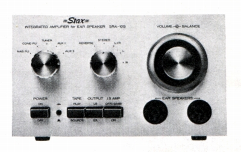 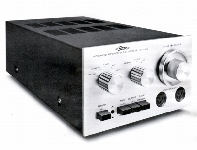
1974年発売、当時58,000円
こちらは純粋なトランジスターアンプ。
■入力端子 感度/入力インピーダンス/最大許容入力
フォノMM
1.0mV/47kΩ/120mV
AUX4系統
100mV/100kΩ/1.2V（内各1系統はコンデンサー型カートリッジ用、チューナー用と表記）
■出力端子 出力レベル/出力インピーダンス/最大出力電圧
録音用端子/出力 100mV/600Ω/12V
PRE-OUT端子 1V/600Ω/12V
（イコライザーアンプ部）
■周波数帯域
30-15,000Hz±0.5dB
■調波歪 0.05％以下
■SN比 90dBr.m.s/100mV入力時
■増幅度 40dB/1kHz
（インターステ−ジアンプ部）
■周波数帯域
5-1MHz+0dB/-3dB
■調波歪 0.05％以下
■SN比 70dBr.m.s/1mV入力時
■増幅度 20dB
（コンデンサーヘッドフォン用アンプ部）
■周波数帯域
5-100,000Hz+0dB/-3dB
■調波歪 0.1％以下/300V出力時
■SN比 100dBr.m.s/0.4V入力時
■増幅度 60dB
■最大出力 300Vr.m.s/プッシュプル
■消費電力 25W(100V;50/60Hz)
■重量
4.0kg
■サイズ W178×H108×D350mm
■備考 MCカートリッジ対応無し
SRA-12S
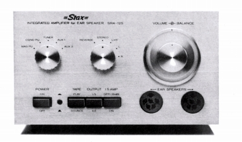 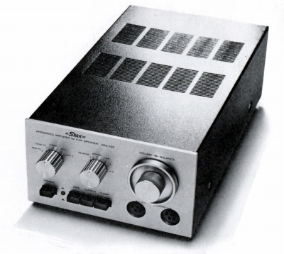
1977年発売、当時72,000円
SRA-10Sの改良モデル。
■入力端子 感度/入力インピーダンス/最大許容入力
フォノMM 1.0mV/47kΩ/80mV
AUX4系統
100mV/100kΩ/0.8V（内各1系統はコンデンサー型カートリッジ用、チューナー用と表記）
■出力端子 出力レベル/出力インピーダンス/最大出力電圧
PRE-OUT端子 1V/600Ω/8V
（イコライザーアンプ部）
■周波数帯域
30-15,000Hz±0.5dB
■調波歪 0.05％以下
■SN比 70dBr.m.s/1mV入力時・IHF
A
■増幅度 40dB/1kHz
（インターステ−ジアンプ部）
■周波数帯域
5-1MHz+0dB/-3dB
■調波歪 0.05％以下
■SN比 90dBr.m.s/100mV入力時
■増幅度 20dB
（コンデンサーヘッドフォン用アンプ部）
■周波数帯域
5-100,000Hz+0dB/-3dB
■調波歪 0.1％以下/300V出力時
■SN比 100dBr.m.s/0.4V入力時
■増幅度 60dB
■最大出力 350Vr.m.s/プッシュプル
■消費電力 30W(100V;50/60Hz)
■重量 4.0kg
■サイズ
W178×H108×D350mm
■備考 MCカートリッジ対応無し
SRA-14S
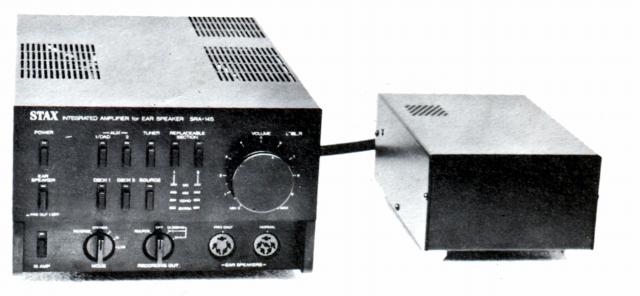
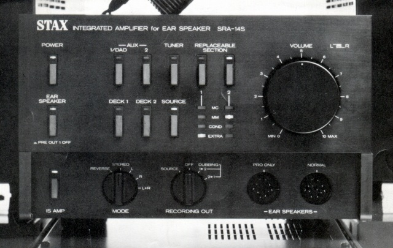
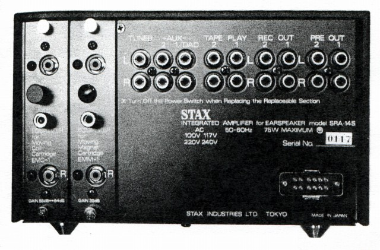
1985年発売、当時198,000円。
ドライバーユニット付きアンプでは唯一、現行の580Vバイアス・コンセントを備えたタイプ。
CD普及後のモデルで、アナログディスク対応はオプション化しているが、STAXのアンプで
唯一自社のエレクトレット・コンデンサー型カートリッジ及びMC型カートリッジ対応が可能。
アナログディスク対応しない場合は、ジャンパー基盤でラインレベル入力2系統を追加可能。
同社ではこうしたオプションシステムを「Replaceable
Section」と呼んでいた。
国内ではアキュフェーズが1993年のC-290より同様のシステムを採用している。
■入力端子 感度/入力インピーダンス/最大許容入力
AUX3系統（ジャンパー基盤で2系統を追加可能）
150mV/50kΩ/1.2V（内1系統はチューナー用と表記）
■出力端子 定格出力レベル/出力インピーダンス/最大出力電圧
録音用端子（2系統） 150mV
PRE-OUT端子 1.5mV/220Ω
（インターステ−ジアンプ部）
■周波数帯域
0.5-500,000Hz+0dB/-3dB
■高調波歪 0.003％/3V出力時at1kHz
■SN比 100dBr.m.s/入力ショート150mV入力時
■増幅度 16.5dB
（コンデンサーヘッドフォン用アンプ部）
■周波数帯域
D.C-30,000Hz+0dB/-3dB
100V出力時/SR-Λ（ラムダ）PRO1台接続
■高調波歪 0.01％at100-100,000Hz/100V出力時/SR-Λ（ラムダ）PRO1台接続
■最大出力 400Vr.m.s/プッシュプル
■消費電力 最大75W(100V;50/60Hz
イコライザー基盤2系統接続時)
■重量 本体3.8kg/電源部2.5kg
■サイズ
本体W225×H147×D412mm/電源部W147×H96×D213mm
■備考
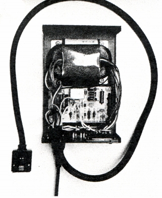
（電源部の内部）
（オプション/MCイコライザー
EMC-1 43,000円）
■周波数帯域 20-20,000Hz±0.2dB
■調波歪 0.003％3V出力時at1kHz
■入力感度 Lo
0.1mV/High 0.25mV
■SN比 78dBr.m.s/0.25mV入力時・IHF
A
■ゲイン 64dB/55dB切替at1kHz
■入力インピーダンス 10Ω/30Ω/100Ωat1kHz
■出力インピーダンス
200Ωat1kHz
■最大許容入力 Lo 6mV/High 16mVat1kHz
■定格出力レベル 150mV
（オプション/MMイコライザー
EMM-1 20,000円）
■周波数帯域
20-20,000Hz±0.2dB
■調波歪 0.003％3V出力時at1kHz
■入力感度 2.5mV
■SN比 80dBr.m.s/2.5mV入力時・IHF
A
■ゲイン 35dBat1kHz
■入力インピーダンス 47kΩat1kHz
■出力インピーダンス
220Ωat1kHz
■最大許容入力 200mVat1kHz
■定格出力レベル 150mV
（オプション/エレクトレット・コンデンサー型用イコライザー
ECC-1 23,000円）
■周波数帯域
20-20,000Hz±0.2dB
■調波歪 0.005％3V出力時at1kHz
■入力感度 18mV
■ゲイン 18.6dBat1kHz
■LRバランス調節（±4dB）機構付き
（オプション/ジャンパー基盤 JB-1 8,000円）
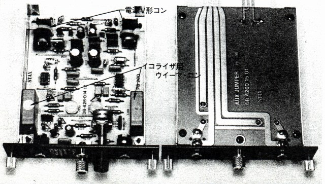
（EMC-1とJB-1）
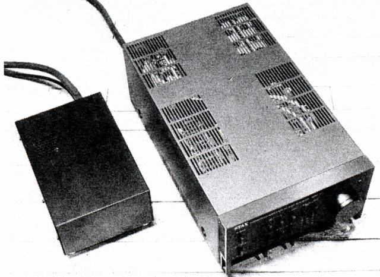
(発売当時の雑誌に掲載された画像 最終プロトタイプか？製品版と天板の通気孔が違う）
STAXのインデックスヘ